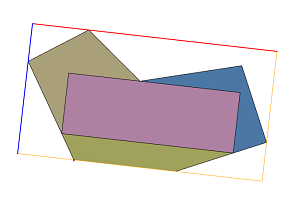
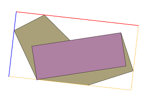
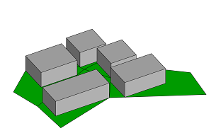
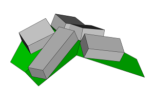
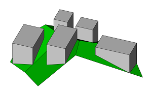

innerRectangle operation
Syntax
innerRectangle(alignment) { selector operator operations | selector operator operations }
Parameters
- alignment (selector)
scope The largest inner rectangle is found that has sides parallel to the scope's axes. edge The largest inner rectangle is found that has a side parallel to one edge. Per outer polygon/hole only edges with length greater than quarter the maximum length are considered. The resulting shape is a rectangle seen from the predominant scope axis of the face normal. The scope's orientation is the same as in the initial shape.
- selector (selector)
shape The inner rectangle polygon. remainder Selects the remainder of the polygon. - operator
The operator defines how the inner rectangle polygons are used to generate successor shapes. This also applies to shapes with more than one faces.: Each polygon is put into a new shape. = All polygons corresponding to the selector are combined into one new shape. - operations
A sequence of CGA operations to execute.
Description
The innerRectangle operation finds for each face of the current shape's geometry the largest rectangle which is fully inside the face.
The face must not have self-intersections.
Related
Examples
Inner Rectangles of Lot Shapes
 |
Lot-->
innerRectangle(scope) {shape : Color | remainder : Color}
Color-->
color(rand(1),rand(1),rand(1))
This example shows the largest inner rectangle aligned to the scope axes. Each polygon is a separate shape.
|
 |
Lot-->
innerRectangle(edge) {shape : Color | remainder = Color}
This example shows the largest inner rectangle aligned to one edge. All polygons corresponding to the remainder are combined into one shape.
|
 |
Lot-->
innerRectangle(scope) { shape : Extrude | remainder : Color }
Extrude-->
extrude(5)
Color-->
color(0,1,0)
This example shows how to use innerRectangle to place mass volumes in planar lots. Each rectangle has sides parallel to the scope axes.
|
 |
Lot-->
comp(f) { all : Rectangle }
Rectangle-->
innerRectangle(scope) { shape : Extrude | remainder : Color }
In this example the component split is used to generate a separate scope for each slanting face. Each generated inner shape is a rectangle seen from the face normal.
|
 |
Lot-->
alignScopeToAxes()
innerRectangle(scope) { shape : Extrude | remainder : Color }
Extrude-->
extrude(world.up.flatTop, 10)
When the scope is aligned to the world coordinate system each inner shape is a rectangle seen from the world's y axis.
|
Copyright ©2008-2021 Esri R&D Center Zurich. All rights reserved.